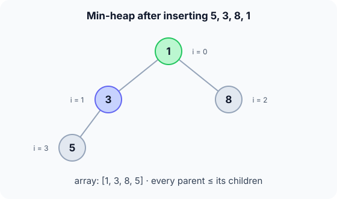

Prerequisites
The analogy
Everyday analogy
Think of a hospital emergency room. Patients don't get seen in arrival order: the most urgent case goes first, whenever they arrived.
A priority queue is that triage desk. Each item has a priority, and "next, please" always returns the most urgent (here, the smallest number).
How it works
Start with a sequence of operations by hand
The queue is a min-heap in an array: every parent is ≤ its children, and the parent of index $i$ is $\lfloor (i-1)/2 \rfloor$. Insert 5, 3, 8, 1. Predict, then open "Check".
Example: predict before you read
Step 1. Insert 5, then 3. 3 lands at index 1, under parent 5. Predict: does it move?
Check
Yes. 3 < 5, so it swaps up: [3, 5].
Step 2. Cover the next line and guess: insert 8 at index 2. Does it move?
Check
No. Its parent 3 is smaller: [3, 5, 8].
Step 3. Insert 1 at index 3. Predict how far it rises.
Check
Its parent (index 1) is 5, so swap: [3, 1, 8, 5]. The new parent is 3, swap again: [1, 3, 8, 5]. 1 is the root.

Quick recall: Before reading further, cover the text above and say out loud: in a min-heap, where is the smallest item, and why?
Check your answer
At the root, index 0, because every parent is ≤ its children, so nothing can be smaller than the top.
Finish the picture: serving the next item
Now call extract-min on [1, 3, 8, 5].
- Remove the root. Predict what goes to the root first.
Check
The last leaf, 5: the array becomes
[5, 3, 8]and 1 is returned. - Sift down. Predict the final heap.
Check
5's children are 3 and 8; 3 is smaller and less than 5, so swap:
[3, 5, 8]. 5 has no children now: done.
Quick recall: Without scrolling up, say out loud: after extract-min, why does the last leaf go to the root?
Check your answer
It keeps the tree complete (no gaps in the array). Then sifting it down restores the heap order.
The rule in plain words
Insert: append at the end, then swap upwards while smaller than the parent.
Extract-min: take the root, move the last leaf to the root, then swap it downwards with its smaller child while it is bigger than that child.
Quick recall: Before you read the code, write the steps of insert in your own words. Then check below.
Check your answer
1. Put the new item at the end of the array. 2. While it is smaller than its parent, swap them. 3. Stop at the root or when the parent is smaller.
The code
Read this code after you have done the inserts by hand. It will make more sense.
typedef struct { int a[100]; int n; } PQ; /* min-heap in an array */
void pq_insert(PQ *q, int v) { /* caller checks n < 100 */
int i = q->n++;
q->a[i] = v;
while (i > 0 && q->a[(i - 1) / 2] > q->a[i]) { /* sift up */
int p = (i - 1) / 2, t = q->a[p];
q->a[p] = q->a[i]; q->a[i] = t;
i = p;
}
}int pq_extract_min(PQ *q) { /* caller checks n > 0 */
int top = q->a[0];
q->a[0] = q->a[--q->n]; /* last leaf to the root */
for (int i = 0;;) { /* sift down */
int s = i, l = 2 * i + 1, r = 2 * i + 2;
if (l < q->n && q->a[l] < q->a[s]) s = l;
if (r < q->n && q->a[r] < q->a[s]) s = r;
if (s == i) break;
int t = q->a[i]; q->a[i] = q->a[s]; q->a[s] = t;
i = s;
}
return top;
}Definition
What you just did, in one line: a priority queue returns the item with the highest priority (here the smallest key) first; a binary min-heap implements it with $O(\log n)$ insert and extract-min.
flowchart TD
A["insert v: put it at index n"] --> B{"v smaller than its parent?"}
B -->|yes| C["swap with parent, move up"]
C --> B
B -->|"no, or at root"| D["done: heap order holds"]
[3, 5, 8], how many times do you take the "swap" arrow? (Answer: twice, first with 5, then with 3.)How fast is it?
Quick recall: Before looking at the formula, predict: in a heap of 1,000 items, how many swaps can one insert need at most?
Check your answer
About 10, the height of the tree, since $2^{10} \approx 1000$.
The heap is a complete binary tree, so its height, and the most swaps one sift can do, is:
$$h \;=\; \lfloor \log_2 n \rfloor \quad\Longrightarrow\quad \text{insert, extract-min} = O(\log n)$$The index rules need no pointers: parent of $i$ is $\lfloor (i-1)/2 \rfloor$, children are $2i+1$ and $2i+2$.
| Operation | Cost | Why |
|---|---|---|
| insert | $O(\log n)$ | Sift up at most the height |
| extract-min | $O(\log n)$ | Sift down at most the height |
| peek-min | $O(1)$ | The minimum is at index 0 |
| Build from $n$ items | $O(n)$ | Bottom-up heapify |
| Search for any value | $O(n)$ | Heap order says little about non-root items |
Warning
A heap is not sorted. [1, 3, 8, 5] is a valid min-heap even though 8 comes before 5. Only the root is guaranteed to be the minimum.
Exam tip
Compare implementations: unsorted array (insert $O(1)$, extract $O(n)$), sorted array (insert $O(n)$, extract $O(1)$), binary heap (both $O(\log n)$). The heap wins when you do many of both.
Common mistakes
- Thinking the heap array is sorted and reading the "second smallest" from index 1 (it could be at index 2).
- In sift-down, swapping with the first smaller child instead of the smallest child.
- Forgetting to decrease
nbefore moving the last leaf to the root.
Try it yourself
Exercise 1 (warm-up)
Is [2, 4, 3, 9, 5] a valid min-heap?
Hint
Check each parent against its children: index 0 → 1, 2; index 1 → 3, 4.
Answer
Yes: 2 ≤ 4 and 3; 4 ≤ 9 and 5.
Exercise 2 (a bit harder)
Insert 7, 2, 6, 1, 9 into an empty min-heap, then extract-min once. Give the array after each step. Write your answer down before you open it.
Show answer
[7] → [2, 7] → [2, 7, 6] → [1, 2, 6, 7] (1 rises past 7 then 2) → [1, 2, 6, 7, 9]. Extract-min returns 1: 9 moves to the root and sinks past 2 then 7, giving [2, 7, 6, 9].
Did you know?
Did you know?
Dijkstra's shortest-path algorithm and Prim's spanning-tree algorithm both run on a priority queue; with a binary heap they take $O((V + E) \log V)$.
Operating systems schedule processes by priority, and event-driven simulations always process the earliest event next: both are priority queues.
Key points to remember
If you remember one thing from each line, remember the because.
- The minimum is at the root because every parent is ≤ its children.
- Insert and extract-min are $O(\log n)$ because a sift moves along one path of a tree of height $\log_2 n$.
- The heap fits in an array because a complete tree has no gaps, so index arithmetic replaces pointers.
- The last leaf moves to the root on extract because that keeps the tree complete.
- Searching is $O(n)$ because heap order only relates parents to children, not siblings.
Self-check questions
Answer these in order, out loud. They follow the page, so your answers become the script of your video.
- How is a priority queue like an emergency room?
Sample answer
Patients are seen by urgency, not arrival time. A priority queue always returns the most urgent item, here the smallest key.
- Walk through inserting 5, 3, 8, 1 into a min-heap.
Sample answer
[5]; 3 swaps up → [3, 5]; 8 stays → [3, 5, 8]; 1 swaps with 5 then with 3 → [1, 3, 8, 5].
- Why does the sift-up loop compare with
a[(i - 1) / 2]?A good answer names that index.
Sample answer
That is the parent of index
iin an array-stored complete binary tree, and the heap rule compares each node with its parent. - So what is a priority queue, in one sentence?
Sample answer
A collection where you can insert items at any time and always remove the one with the highest priority, typically implemented as a binary heap.
- Why are insert and extract-min $O(\log n)$?
A good answer mentions the height of the tree.
Sample answer
Each sift moves one item along a single root-to-leaf path, and a complete binary tree with $n$ nodes has height about $\log_2 n$.
- What do insert, extract-min, peek and search cost?
Sample answer
insert and extract-min $O(\log n)$, peek $O(1)$, search for an arbitrary value $O(n)$.
- Why not just keep a sorted array?
Sample answer
Extracting the minimum would be cheap, but every insert would shift elements, costing $O(n)$. A heap keeps both operations at $O(\log n)$.
- If you had to teach this to a friend in 2 minutes, what would you leave out, and why?
Sample answer
I'd leave out the index formulas and the $O(n)$ build. I'd keep the emergency-room analogy, the four inserts with 1 rising to the top, and "smallest first, $O(\log n)$ per operation".
External resources
- VisuAlgo: Binary heap: animate insert and extract on a priority queue.
- GeeksforGeeks: Priority queue: implementations compared.
- Wikipedia: Priority queue: operations, implementations and applications.
- MIT OCW 6.006: lecture on binary heaps and priority queues.
Videos
- YouTube search: binary heap priority queue: pick a walkthrough of sift up and sift down.